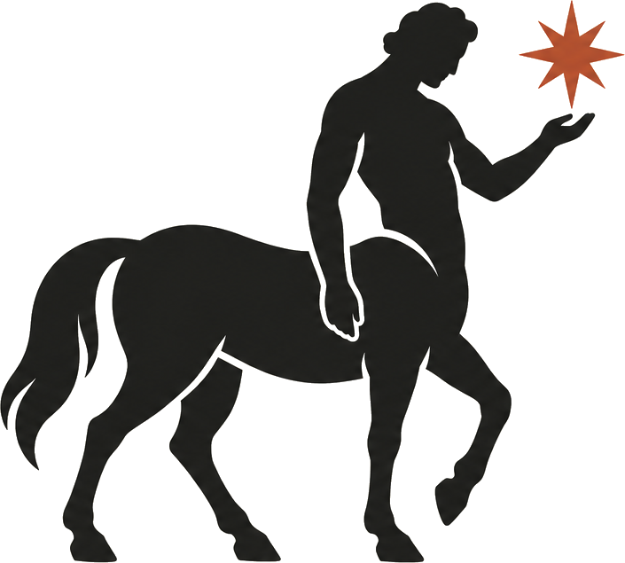

The difficult part is everything around that payment—authentication, webhook handling, billing state, retries, cancellations, and preventing users from accessing features they no longer pay for.
In this tutorial, we’ll build the billing foundation for a serverless subscription site.